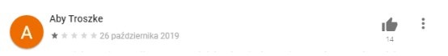
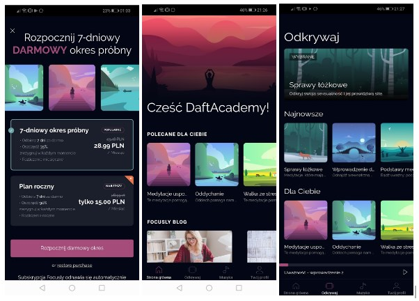

Focusly app
Design problems solved during Product Design Level Up 2020 course by Daftcode.
About the project
The task was to solve design problems of already existing app Focusly using knowledge gained during the course organised by Daftcode company for designers with up to 2 years of experience.
The proccess
Before starting the tasks, I did a little research on the Focusly application. This fragment of the app description can be found on the official website in the Google Play Store:
Focusly will help you discover the secret of meditation. It will show you how to be happier, more calm and productive. Learn to relax with calm, guided meditation (guided meditation really works!), Relaxing exercises, and mindfulness techniques to help you bring peace and balance into your life in just a few minutes a day. Try this app today! Focusly: Meditation, Peace and Relaxation.
the app has an average rating of 2.0 issued by a total of over 200 users, and this is the example of reviews where users raise similar issues in unrefined words:
A week-long trial period after an early payment of PLN 28, in total it's for nothing. Give me a free demo so people can check what it is. Looking at the meditating ball? And when I look at the poop, do I shit?
There is no option to enter your card details after a week - so you can't be sure you won't rip your money off right away. That's what spirituality looks like - we'll make an app for meditation, spirituality, and you know, but give your card details first, a week will be enough to read! Probably a rush bug, otherwise you would be sure of it and not make you pay for an uncertain, badly rated app. PS. At first you had more humility in your answers, this PR specialist is not serving you, he advises you poorly :)
There is a clear gap between the expectations and experiences of users who reach for the meditation app. They want to experience relaxation and peace, but their initial contact and the apparent compulsion to provide sensitive data make them feel bad.
Complaining about having to enter your card details in order to start using your free trial period is very common. There is no need to provide such data, but the screen that appears at the beginning of using the app is designed in such a way that users cannot skip this step (just click the X in the upper left corner). Is such a screen designed in this place really necessary? At this point, it's hard to answer this question, and you should also know Focusly's business goals.
Design problem #1
In this task, you want more people to hear the audio introduction to the app and to the meditation itself.
Introduction to the app
It seems that the audio input to the app is placed in an unfortunate place, it is very easy to turn it off and not go back to it anymore. You should move them elsewhere - preferably just under the slogan “Hi [username]” and communicate that listening to this recording is the best way to start learning meditation. After the user listens to it, it should disappear, so that it will not irritate the familiar user.
Introduction to Meditation
The effect of the default option. An introduction to meditation is currently on the Discover page and does take a while to find. In order for more people to listen to this meditation, it should be moved to the main page of the app, preferably to the top, and additionally highlighted. Instead of the "Recommended for You" section, you can add a temporary "Introduction to Meditation" section. After the user has listened to the entire introduction, the added section will be changed to "Recommended for you".
Design problem #2
You want the user to meditate 7 days in a row, after which he will be a meditation master and achieve his Zen. How can he be involved in this?
Target gradient effect
There is no indication of the user's meditation skills progress in the app. A progress bar should be added to show the user how many passages of a given meditation he has already worked through and how close he or she is to achieving the goal, both inside the meditation and in the list view with different meditations.
The effect of sunk costs
For example, a notification about the upcoming meditation session with an appropriate message - emphasizing that the user has already devoted his time to meditation and it is worth continuing, not to lose the effects of the exercises performed so far. Here you should test at what point such a message should appear, perhaps not immediately after the first session, so that the time spent has some meaning for the user.
IKEA effect
Notifications can only be turned on or off, this is done in the profile. In order for the user to feel more that the service is "his" and takes part in its creation, it is possible to introduce the possibility of personalizing notifications, setting the appropriate time. After the meditation session is over, you can ask if the user wants to enable the notification about the next session. This solution would be the most convenient.
Hedonic Adaptation
The introduction is a meditation cycle, one session per day. To increase the enjoyment of the experience, access to the next sessions can only be unlocked on the day of its order.
The rule of the end and peak
At the end of each meditation session, there is a thank you for participating, it is probably not worth adding a screen with such a thank you, but it would be worth adding such a screen after completing the entire thematic cycle.
Social proof of certificates and awards
You can create some kind of certificate, badge, screen with information about the award - the title of a Zen master (or rather an adept of the art), to signal it.
Final comments
When adding various functions, it is of course important to remember that there shouldn't be too much going on in the app, it could distract the user and adversely affect the goals that the product is about to achieve. Ideas should also be discussed regarding the product's business goals and then tested on prototypes by potential users before being incorporated into the app.